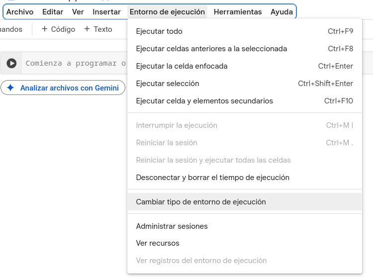
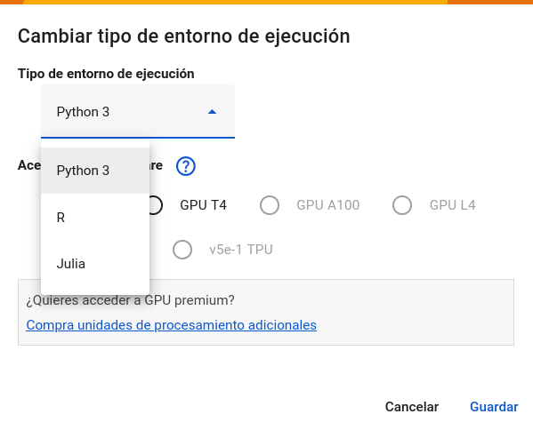

Hace menos de un mes, en preparativo para mis clases de Fundamentos de Aprendizaje Automático en la Maestría en Ciencias de Datos de la Austral, publiqué un post sobre como ejecutar Julia en Google Colab, dado que no había soporte nativo. Bueno, obsoleto, ya disponemos de soporte nativo para Julia en Google Colab: https://info.juliahub.com/blog/julia-now-available-on-google-colab.
Seguramente, esto va a tener un impacto muy positivo en el crecimiento del ecosistema de Julia, permitiendo a mas personas acceder al uso del lenguaje para tareas que requiera de uso de recursos computacionales no disponibles en sus PCs locales.
Bueno, ¿pero como hacemos para ejecutar Julia en Colab ahora? Fácil, con un notebook abierto, vamos a Entorno de ejecución/Cambiar entorno de ejecución:

y, en la opción de tipo de entorno, seleccionamos Julia:

Y listo, Julia en Colab.